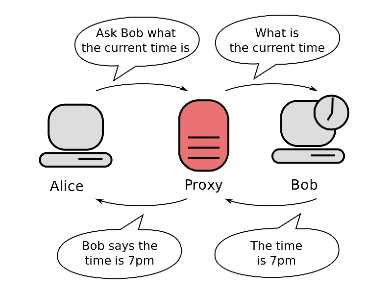
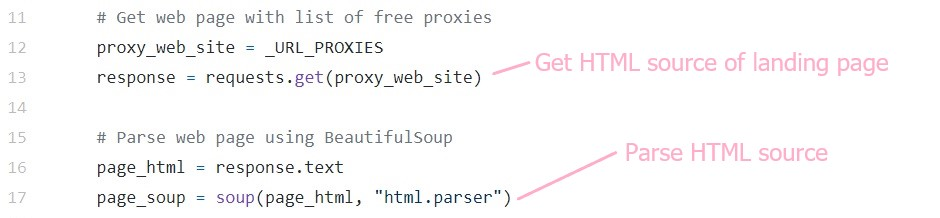
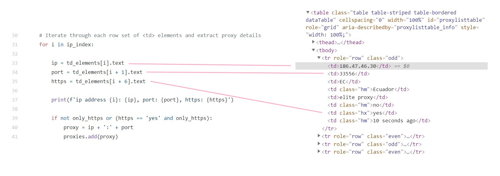
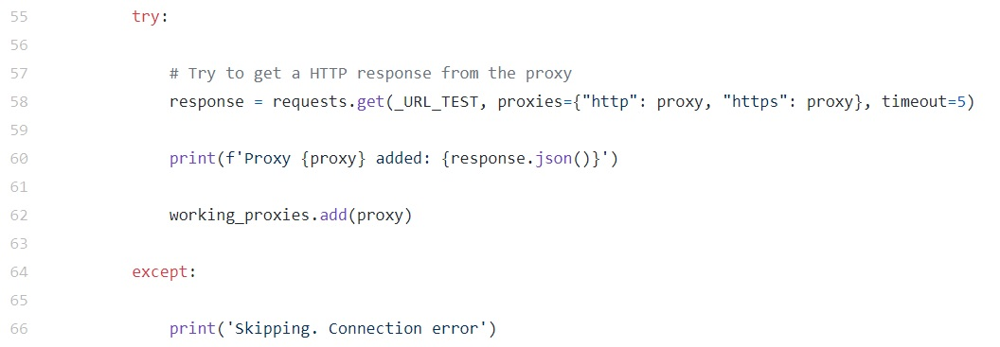

FInd Me Proxies (FIMP)
Proxies are an intermediary server that separates users from the websites they browse. When browsing without a proxy server, the HTML requests are sent directly between your PC's browser and the website. Using a proxy creates a intermediary connection between the two. This means your browser's request will get forwarded to the proxy server, which will then retrieve information about the website, make the request on your behalf, and whatever data (usually a web page) the website returns (to the proxy) in response to the request, it will pass it back to your browser. In doing so, the proxy prevents the websites you're browsing from knowing your PC's IP address, showing only the proxy's IP. This way, you can now access and search the Internet anonymously using proxies as a 'gateway'. Below is a simple illustration from Wikipedia on communication between 2 computers connected through a proxy.
A proxy is capable of more than forwarding web requests for you to surf the Internet anonymously. Proxy servers can also serve as firewalls and web filters, provide shared network connections, and cache data to speed up common requests. A well configured proxy protects users and the internal network from the dangers out in the world of the wild Internet. Lastly, proxy servers provide a high level of privacy. Below are some reasons why organizations and individuals use a proxy server.
- To control internet usage of employees and children
- Bandwidth savings and improved speeds
- Privacy
- Improved security
- Get access to blocked resources
To aid us in extracting the list of proxy details, we'll be using the BeautifulSoup library. BeautifulSoup is a Python library for extracting data out from HTML and XML files. It provides pythonic idioms ways of navigating, searching, and modifying the parse tree. Using the Python requests library, we retrieve the HTML source of the landing page. We then parse the HTML source using BeautifulSoup.

After parsing the HTML source, we retrieve the <table> element that
contains the list of proxy details using the find_all method of the HTML parser.
We tell the parser to return all <table> elements with the id
attribute having the value proxylisttable. There will only be 1 such
table, so we can access it via the first item in the returned array. To get the proxy
details, we get the parser to return all <td> elements within the proxy
list table.
Within the proxy list table, each row has 8 columns and therefore 8 <td> elements. We iterate through each row and extract the proxy's IP, port number and whether it supports HTTPS.The proxy details are stored in an array and returned.
"You get what you pay for" as the saying goes. Being a free service, there is no guarantee of service availability. Free usually means that the backend hardware or encryption maybe lacking. You’ll likely see performance, availability and potential data security issues. Never reveal your credit card numbers on these proxies.
To verify that the proxies scraped are working, we'll will test them against https://httpbin.org/. httpbin provides a variety of HTTP request and response API services. We'll be using the IP API under the request inspection service. The IP API will return the requester's IP address.
For each proxy scrapped, we'll use the the requests Python library to construct a HTTP request with the proxy IP and port number. The constructed request is then send to httpbin's IP API. If we receive a JSON response containing the proxy's IP address within 5 seconds, we can be sure that the proxy is up and running. If not, a connection error is flagged and we move on to the next proxy. In the end, we'll have a list of working proxy IP's and their respective port numbers.
All code of this project can be found at my GitHub Repository.